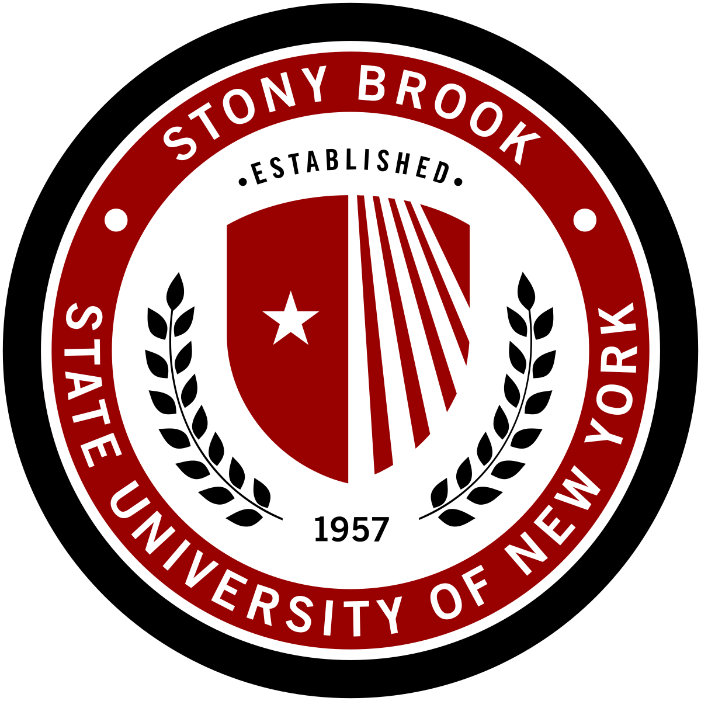
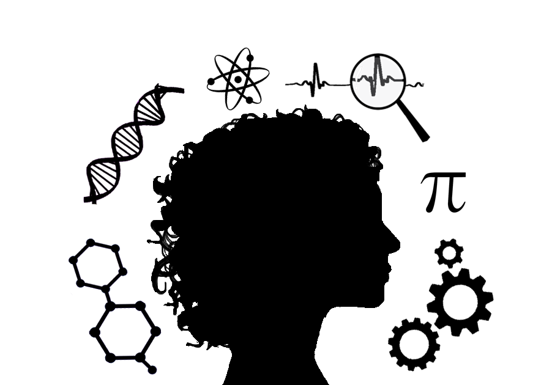

I am a second year student at Stony Brook Uniersity pursuing a Bachelor's of Science in Computer Science with an intended specialization in Security and Privacy as well as a minor in Linguistics!
In college, I am an avid learner for discovering the vast fields within computer science and how I can apply my technical skills to finding a potential career in the future. As a WISE honors student, the sophomore representative of my university's Computing Society, and a memeber of a team creating apps for students like me, I enjoy taking on challenges and opportunities to grow and gain experiences in becoming a computer scientist!
In the tech industry, I am a researcher on malware detection in smartphone devices, a conference presenter and author, a web developer in progress (clearly), and an advocate for equity and inclusion. As an eager employee who can't wait to be a part of a community that will make a positive impact to the world, my current interests in the industry are: Software Engineering, Cybersecurity, Product Management, Artificial Intelligence, and Natural Language Processing. Though, I would love to learn about more!
In my home, I am a daughter to two humble, hardworking, and loving immigrant parents as well as an older sister who strives to be a role model for her brother. I am the first person in my family to go to college, yet alone, be a woman in STEM. And most importantly, I am chaser for the American dream to finding success and making my family proud!

